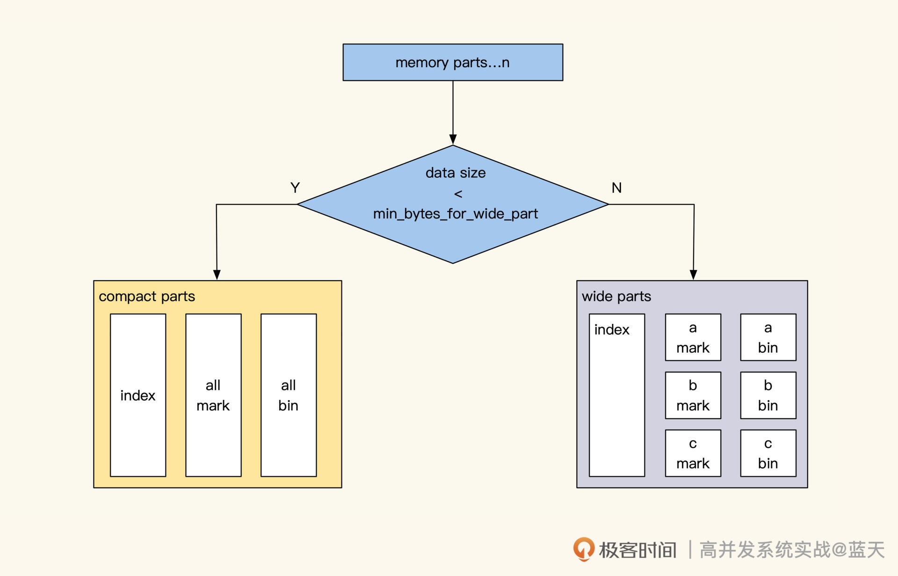
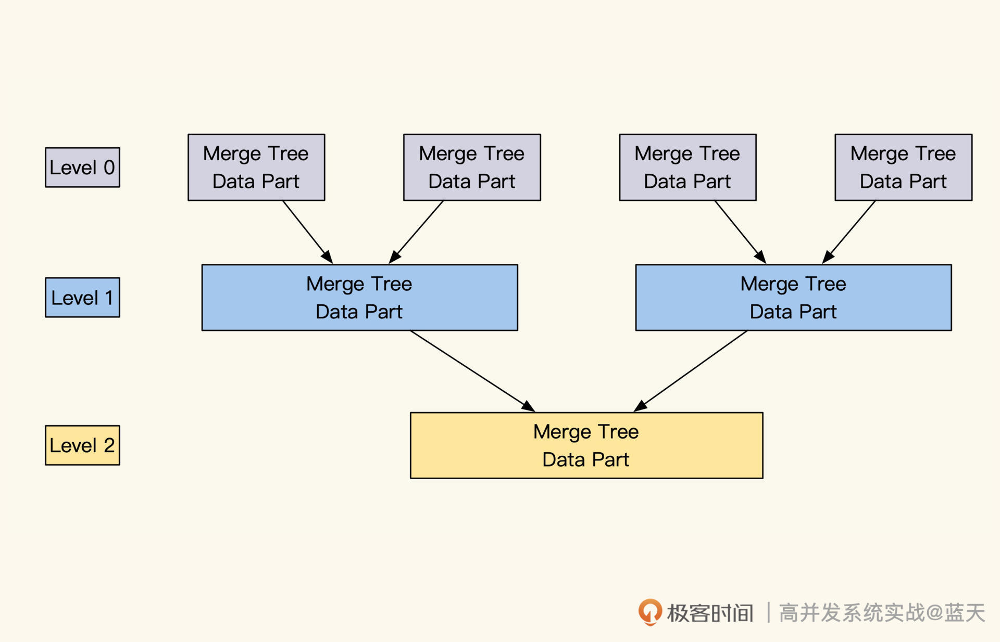
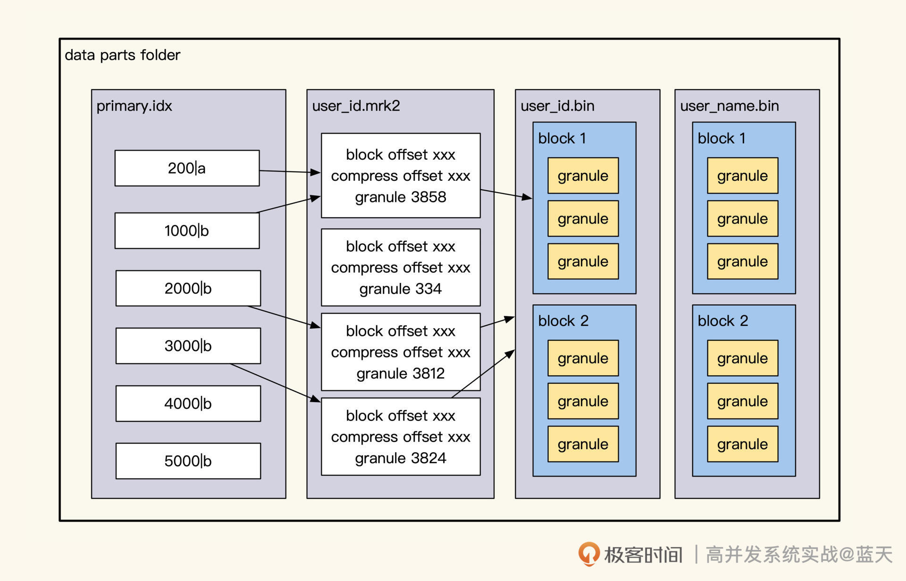
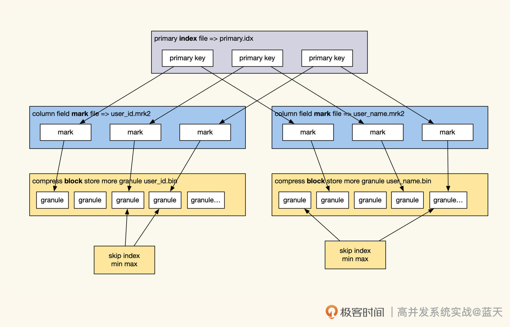
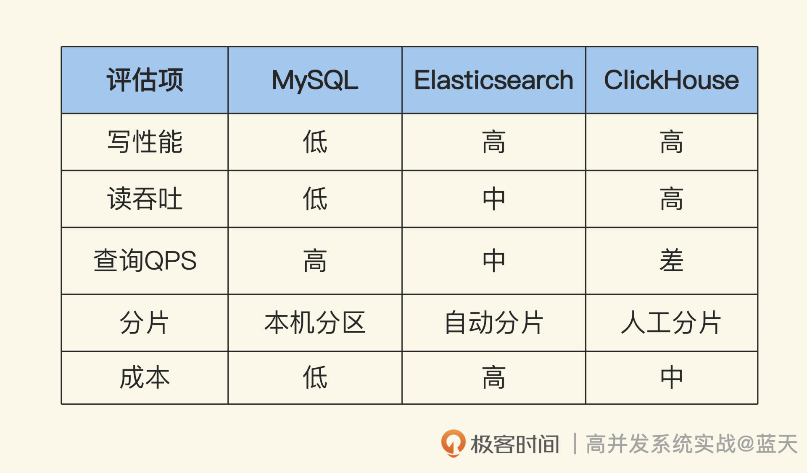

- 00 开篇词 高并发系统，技术实力的试金石.md.html
- 01 结构梳理：大并发下，你的数据库表可能成为性能隐患.md.html
- 02 缓存一致：读多写少时，如何解决数据更新缓存不同步？.md.html
- 03 Token：如何降低用户身份鉴权的流量压力？.md.html
- 04 同城双活：如何实现机房之间的数据同步？.md.html
- 05 共识Raft：如何保证多机房数据的一致性？.md.html
- 06 领域拆分：如何合理地拆分系统？.md.html
- 07 强一致锁：如何解决高并发下的库存争抢问题？.md.html
- 08 系统隔离：如何应对高并发流量冲击？.md.html
- 09 分布式事务：多服务的2PC、TCC都是怎么实现的？.md.html
- 10 稀疏索引：为什么高并发写不推荐关系数据库？.md.html
- 11 链路追踪：如何定制一个分布式链路跟踪系统 ？.md.html
- 12 引擎分片：Elasticsearch如何实现大数据检索？.md.html
- 13 实时统计：链路跟踪实时计算中的实用算法.md.html
- 14 跳数索引：后起新秀ClickHouse.md.html
- 15 实践方案：如何用C++自实现链路跟踪？.md.html
- 16 本地缓存：用本地缓存做服务会遇到哪些坑？.md.html
- 17 业务脚本：为什么说可编程订阅式缓存服务更有用？.md.html
- 18 流量拆分：如何通过架构设计缓解流量压力？.md.html
- 19 流量调度：DNS、全站加速及机房负载均衡.md.html
- 20 数据引擎：统一缓存数据平台.md.html
- 21 业务缓存：元数据服务如何实现？.md.html
- 22 存储成本：如何推算日志中心的实现成本？.md.html
- 23 网关编程：如何通过用户网关和缓存降低研发成本？.md.html
- 24 性能压测：压测不完善，效果减一半.md.html
- 答疑课堂 思考题答案（一）.md.html
- 结束语 为者常成，行者常至.md.html
- 捐赠
14 跳数索引：后起新秀ClickHouse
你好，我是徐长龙。
通过前面的学习，我们见识到了Elasticsearch的强大功能。不过在技术选型的时候，价格也是重要影响因素。Elasticsearch虽然用起来方便，但却有大量的硬件资源损耗，再富有的公司，看到每月服务器账单的时候也会心疼一下。
而ClickHouse是新生代的OLAP，尝试使用了很多有趣的实现，虽然仍旧有很多不足，比如不支持数据更新、动态索引较差、查询优化难度高、分布式需要手动设计等问题。但由于它架构简单，整体相对廉价，逐渐得到很多团队的认同，很多互联网企业加入社区，不断改进ClickHouse。
ClickHouse属于列式存储数据库，多用于写多读少的场景，它提供了灵活的分布式存储引擎，还有分片、集群等多种模式，供我们搭建的时候按需选择。
这节课我会从写入、分片、索引、查询的实现这几个方面带你重新认识ClickHouse。在学习过程中建议你对比一下Elasticsearch、MySQL、RocksDB的具体实现，想想它们各有什么优缺点，适合什么样的场景。相信通过对比，你会有更多收获。
并行能力CPU吞吐和性能
我先说说真正使用ClickHouse的时候，最让我意料不到的地方。
我们先选个熟悉的参照物——MySQL，MySQL在处理一个SQL请求时只能利用一个CPU。但是ClickHouse则会充分利用多核，对本地大量数据做快速的计算，因此ClickHouse有更高的数据处理能力（2～30G/s，未压缩数据），但是这也导致它的并发不高，因为一个请求就可以用光所有系统资源。
我们刚使用ClickHouse的时候，常常碰到查几年的用户行为时，一个SQL就会将整个ClickHouse卡住，几分钟都没有响应的情况。
官方建议ClickHouse的查询QPS 限制在100左右，如果我们的查询索引设置得好，几十上百亿的数据可以在1秒内将数据统计返回。作为参考，如果换成MySQL，这个时间至少需要一分钟以上；而如果ClickHouse的查询设计得不好，可能等半小时还没有计算完毕，甚至会出现卡死的现象。
所以，你使用ClickHouse的场景如果是对用户服务的，最好对这种查询做缓存。而且，界面在加载时要设置30秒以上的等待时间，因为我们的请求可能在排队等待别的查询。
如果我们的用户量很大，建议多放一些节点用分区、副本、相同数据子集群来分担查询计算的压力。不过，考虑到如果想提供1w QPS查询，极端的情况下需要100台ClickHouse存储同样的数据，所以建议还是尽量用脚本推送数据结果到缓存中对外服务。
但是，如果我们的集群都是小数据，并且能够保证每次查询都可控，ClickHouse能够支持每秒上万QPS的查询，这取决于我们投入多少时间去做优化分析。
对此，我推荐的优化思路是：基于排序字段做范围查询过滤后，再做聚合查询。你还要注意，需要高并发查询数据的服务和缓慢查询的服务需要隔离开，这样才能提供更好的性能。
分享了使用体验，我们还是按部就班来分析分析ClickHouse在写入、储存、查询等方面的特性，这样你才能更加全面深入地认识它。
批量写入优化
ClickHouse的客户端驱动很有意思，客户端会有多个写入数据缓存，当我们批量插入数据时，客户端会将我们要insert的数据先在本地缓存一段时间，直到积累足够配置的block_size后才会把数据批量提交到服务端，以此提高写入的性能。
如果我们对实时性要求很高的话，这个block_size可以设置得小一点，当然这个代价就是性能变差一些。
为优化高并发写服务，除了客户端做的合并，ClickHouse的引擎MergeTree也做了类似的工作。为此单个ClickHouse批量写性能能够达到280M/s（受硬件性能及输入数据量影响）。
MergeTree采用了批量写入磁盘、定期合并方式（batch write-merge），这个设计让我们想起写性能极强的RocksDB。其实，ClickHouse刚出来的时候，并没有使用内存进行缓存，而是直接写入磁盘。
最近两年ClickHouse做了更新，才实现了类似内存缓存及WAL日志。所以，如果你使用ClickHouse，建议你搭配使用高性能SSD作为写入磁盘存储。
事实上，OLAP有两种不同数据来源：一个是业务系统，一个是大数据。
来自业务系统的数据，属性字段比较多，但平时更新量并不大。这种情况下，使用ClickHouse常常是为了做历史数据的筛选和属性共性的计算。而来自大数据的数据通常会有很多列，每个列代表不同用户行为，数据量普遍会很大。
两种情况数据量不同，那优化方式自然也不同，具体ClickHouse是怎么对这这两种方式做优化的呢？我们结合后面的图片继续分析：

当我们批量输入的数据量小于min_bytes_for_wide_part设置时，会按compact part方式落盘。这种方式会将落盘的数据放到一个data.bin文件中，merge时会有很好的写效率，这种方式适合于小量业务数据筛选使用。
当我们批量输入的数据量超过了配置规定的大小时，会按wide part方式落盘，落盘数据的时候会按字段生成不同的文件。这个方式适用于字段较多的数据，merge相对会慢一些，但是对于指定参与计算列的统计计算，并行吞吐写入和计算能力会更强，适合分析指定小范围的列计算。
可以看到，这两种方式对数据的存储和查询很有针对性，可见字段的多少、每次的更新数据量、统计查询时参与的列个数，这些因素都会影响到我们服务的效率。
当我们大部分数据都是小数据的时候，一条数据拆分成多个列有一些浪费磁盘IO，因为是小量数据，我们也不会给他太多机器，这种情况推荐使用compact parts方式。当我们的数据列很大，需要对某几个列做数据统计分析时，wide part的列存储更有优势。
ClickHouse如何提高查询效率
可以看到，数据库的存储和数据如何使用、如何查询息息相关。不过，这种定期落盘的操作虽然有很好的写性能，却产生了大量的data part文件，这会对查询效率很有影响。那么ClickHouse是如何提高查询效率呢？
我们再仔细分析下，新写入的parts数据保存在了 data parts 文件夹内，数据一旦写入数据内容，就不会再进行更改。
一般来说，data part的文件夹名格式为 partition（分区）_min_block_max_block_level，并且为了提高查询效率，ClickHouse会对data part定期做merge合并。

如上图所示，merge操作会分层进行，期间会减少要扫描的文件夹个数，对数据进行整理、删除、合并操作。你还需要注意，不同分区无法合并，所以如果我们想提高一个表的写性能，多分几个分区会有帮助。
如果写入数据量太大，而且数据写入速度太快，产生文件夹的速度会超过后台合并的速度，这时ClickHouse就会报Too many part错误，毕竟data parts文件夹的个数不能无限增加。
面对这种报错，调整min_bytes_for_wide_part或者增加分区都会有改善。如果写入数据量并不大，你可以考虑多生成compact parts数据，这样可以加快合并速度。
此外，因为分布式的ClickHouse表是基于ZooKeeper做分布式调度的，所以表数据一旦写并发过高，ZooKeeper就会成为瓶颈。遇到类似问题，建议你升级ClickHouse，新版本支持多组ZooKeeper，不过这也意味着我们要投入更多资源。
稀疏索引与跳数索引
ClickHouse的查询功能离不开索引支持。Clickhouse有两种索引方式，一种是主键索引，这个是在建表时就需要指定的；另一种是跳表索引，用来跳过一些数据。这里我更推荐我们的查询使用主键索引来查询。
主键索引
ClickHouse的表使用主键索引，才能让数据查询有更好的性能，这是因为数据和索引会按主键进行排序存储，用主键索引查询数据可以很快地处理数据并返回结果。ClickHouse属于“左前缀查询”——通过索引和分区先快速缩小数据范围，然后再遍历计算，只不过遍历计算是多节点、多CPU并行处理的。
那么ClickHouse如何进行数据检索？这需要我们先了解下data parts文件夹内的主要数据组成，如下图：

结合图示，我们按从大到小的顺序看看data part的目录结构。
在data parts文件夹中，bin文件里保存了一个或多个字段的数据。继续拆分bin文件，它里面是多个block数据块，block是磁盘交互读取的最小单元，它的大小取决于min_compress_block_size设置。
我们继续看block内的结构，它保存了多个granule（颗粒），这是数据扫描的最小单位。每个granule默认会保存8192行数据，其中第一条数据就是主键索引数据。data part文件夹内的主键索引，保存了排序后的所有主键索引数据，而排序顺序是创建表时就指定好的。
为了加快查询的速度，data parts内的主键索引（即稀疏索引）会被加载在内存中，并且为了配合快速查找数据在磁盘的位置，ClickHouse在data part文件夹中，会保存多个按字段名命名的mark文件，这个文件保存的是bin文件中压缩后的block的offset，以及granularity在解压后block中的offset，整体查询效果如下图：

具体查询过程是这样的，我们先用二分法查找内存里的主键索引，定位到特定的mark文件，再根据mark查找到对应的block，将其加载到内存，之后在block里找到指定的granule开始遍历加工，直到查到需要的数据。
同时由于ClickHouse允许同一个主键多次Insert的，查询出的数据可能会出现同一个主键数据出现多次的情况，需要我们人工对查询后的结果做去重。
跳数索引
你可能已经发现了，ClickHouse除了主键外，没有其他的索引了。这导致无法用主键索引的查询统计，需要扫全表才能计算，但数据库通常每天会保存几十到几百亿的数据，这么做性能就很差了。
因此在性能抉择中，ClickHouse通过反向的思维，设计了跳数索引来减少遍历granule的资源浪费，常见的方式如下：
- min_max：辅助数字字段范围查询，保存当前矩阵内最大最小数；
- set：可以理解为列出字段内所有出现的枚举值，可以设置取多少条；
- Bloom Filter：使用Bloom Filter确认数据有没有可能在当前块；
- func：支持很多where条件内的函数，具体你可以查看 官网。
跳数索引会按上面提到的类型和对应字段，保存在data parts文件夹内，跳数索引并不是减少数据搜索范围，而是排除掉不符合筛选条件的granule，以此加快我们查询速度。
好，我们回头来整体看看ClickHouse的查询工作流程：
1.根据查询条件，查询过滤出要查询需要读取的data part 文件夹范围；
2.根据data part 内数据的主键索引、过滤出要查询的granule；
3.使用skip index 跳过不符合的granule；
4.范围内数据进行计算、汇总、统计、筛选、排序；
5.返回结果。
我补充说明一下，上面这五步里，只有第四步里的几个操作是并行的，其他流程都是串行。
在实际用上ClickHouse之后，你会发现很难对它做索引查询优化，动不动就扫全表，这是为什么呢？
主要是我们大部分数据的特征不是很明显、建立的索引区分度不够。这导致我们写入的数据，在每个颗粒内区分度不大，通过稀疏索引的索引无法排除掉大多数的颗粒，所以最终ClickHouse只能扫描全表进行计算。
另一方面，因为目录过多，有多份数据同时散落在多个data parts文件夹内，ClickHouse需要加载所有date part的索引挨个查询，这也消耗了很多的资源。这两个原因导致ClickHouse很难做查询优化，当然如果我们的输入数据很有特征，并且特征数据插入时，能够按特征排序顺序插入，性能可能会更好一些。
实时统计
前面我们说了ClickHouse往往要扫全表才做统计，这导致它的指标分析功能也不是很友好，为此官方提供了另一个引擎，我们来看看具体情况。
类似我们之前讲过的内存计算，ClickHouse能够将自己的表作为数据源，再创建一个Materialized View的表，View表会将数据源的数据通过聚合函数实时统计计算，每次我们查询这个表，就能获得表规定的统计结果。
下面我给你举个简单例子，看看它是如何使用的：
-- 创建数据源表
CREATE TABLE products_orders
(
prod_id UInt32 COMMENT '商品',
type UInt16 COMMENT '商品类型',
name String COMMENT '商品名称',
price Decimal32(2) COMMENT '价格'
) ENGINE = MergeTree()
ORDER BY (prod_id, type, name)
PARTITION BY prod_id;
--创建 物化视图表
CREATE MATERIALIZED VIEW product_total
ENGINE = AggregatingMergeTree()
PARTITION BY prod_id
ORDER BY (prod_id, type, name)
AS
SELECT prod_id, type, name, sumState(price) AS price
FROM products_orders
GROUP BY prod_id, type, name;
-- 插入数据
INSERT INTO products_orders VALUES
(1,1,'过山车玩具', 20000),
(2,2,'火箭',10000);
-- 查询结果
SELECT prod_id,type,name,sumMerge(price)
FROM product_total
GROUP BY prod_id, type, name;
当数据源插入ClickHouse数据源表，生成data parts数据时，就会触发View表。View表会按我们创建时设置的聚合函数，对插入的数据做批量的聚合。每批数据都会生成一条具体的聚合统计结果并写入磁盘。
当我们查询统计数据时，ClickHouse会对这些数据再次聚合汇总，才能拿到最终结果对外做展示。这样就实现了指标统计，这个实现方式很符合ClickHouse的引擎思路，这很有特色。
分布式表
最后，我额外分享一个ClicHouse的新特性。不过这部分实现还不成熟，所以我们把重点放在这个特性支持什么功能上。
ClickHouse的分布式表，不像Elasticsearch那样全智能地帮我们分片调度，而是需要研发手动设置创建，虽然官方也提供了分布式自动创建表和分布式表的语法，但我不是很推荐，因为资源的调配目前还是偏向于人工规划，ClickHouse并不会自动规划，使用类似的命令会导致100台服务器创建100个分片，这有些浪费。
使用分布式表，我们就需要先在不同服务器手动创建相同结构的分片表，同时在每个服务器创建分布式表映射，这样在每个服务上都能访问这个分布式表。
我们通常理解的分片是同一个服务器可以存储多个分片，而ClickHouse并不一样，它规定一个表在一个服务器里只能存在一个分片。
ClickHouse的分布式表的数据插入，一般有两种方式。
一种是对分布式表插入数据，这样数据会先在本地保存，然后异步转发到对应分片，通过这个方式实现数据的分发存储。
第二种是由客户端根据不同规则（如随机、hash），将分片数据推送到对应的服务器上。这样相对来说性能更好，但是这么做，客户端需要知道所有分片节点的IP。显然，这种方式不利于失败恢复。
为了更好平衡高可用和性能，还是推荐你选择前一种方式。但是由于各个分片为了保证高可用，会先在本地存储一份，然后再同步推送，这很浪费资源。面对这种情况，我们比较推荐的方式是通过类似proxy服务转发一层，用这种方式解决节点变更及直连分发问题。
我们再说说主从分片的事儿。ClickHouse的表是按表设置副本（主从同步），副本之间支持同步更新或异步同步。
主从分片通过分布式表设置在ZooKeeper内的相同路径来实现同步，这种设置方式导致ClickHouse的分片和复制有很多种组合方式，比如：一个集群内多个子集群、一个集群整体多个分片、客户端自行分片写入数据、分布式表代理转发写入数据等多种方式组合。
简单来说，就是ClickHouse支持人为做资源共享的多租户数据服务。当我们扩容服务器时，需要手动修改新加入集群分片，创建分布式表及本地表，这样的配置才可以实现数据扩容，但是这种扩容数据不会自动迁移。
总结
ClickHouse作为OLAP的新秀代表，拥有很多独特的设计，它引起了OLAP数据库的革命，也引发很多云厂商做出更多思考，参考它的思路来实现HTAP服务。
通过今天的讲解，相信你也明白ClickHouse的关键特性了。
我们来回顾一下：ClickHouse通过分片及内存周期顺序落盘，提高了写并发能力；通过后台定期合并data parts文件，提高了查询效率；在索引方面，通过稀疏索引缩小了检索数据的颗粒范围，对于不在主键的查询，则是通过跳数索引来减少遍历数据的数据量；另外，ClickHouse还有多线程并行读取筛选的设计。
这些特性，共同实现了ClickHouse大吞吐的数据查找功能。
而最近选择 Elasticsearch还是ClickHouse更好的话题，讨论得非常火热，目前来看还没有彻底分出高下。
个人建议如果硬件资源丰富，研发人员少的话，就选择Elasticsearch；硬件资源少，研发人员多的情况，可以考虑试用ClickHouse；如果硬件和人员都少，建议买云服务的云分布式数据库去做，需要根据团队具体情况来合理地决策。
我还特意为你整理了一张评估表格，贴在了文稿里。

思考题
ClickHouse是不能轻易修改删除数据的，那我们要如何做历史数据的清理呢？
期待你在留言区与我互动交流！如果觉得这节课内容还不错，请推荐、分享给更多朋友。
© 2019 - 2023 Liangliang Lee. Powered by gin and hexo-theme-book.